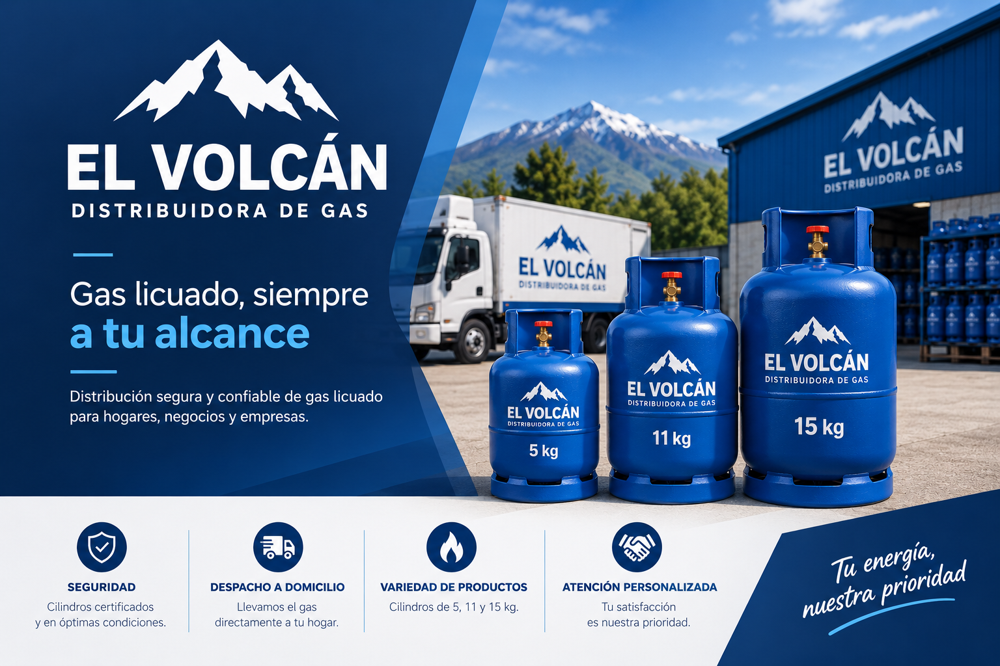

Despacho a domicilio
Llevamos tu cilindro de gas directamente hasta tu hogar.

Somos una tienda de gas licuado en Chillán, Región de Ñuble. Vendemos cilindros de 5, 11 y 15 kg y hacemos despacho a domicilio.
En Gas El Volcán buscamos que pedir gas sea simple. Eliges el cilindro, revisas el detalle y te registras para dejar tus datos de despacho. Atendemos casas, departamentos y pequeños negocios.


Llevamos tu cilindro de gas directamente hasta tu hogar.
Contamos con cilindros de 5, 11 y 15 kg.
Ver productosCrea una cuenta o inicia sesión para usar la tienda.
RegistrarseAntes de instalar tu cilindro, revisa estos consejos de seguridad.